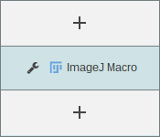
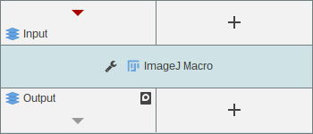
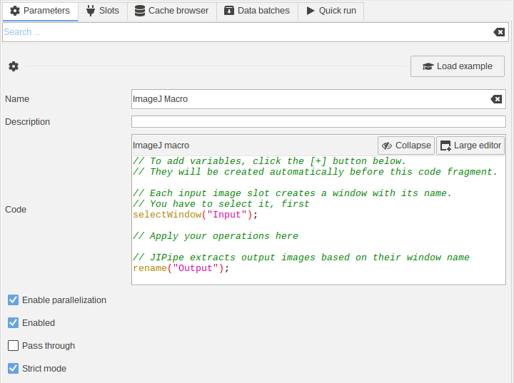
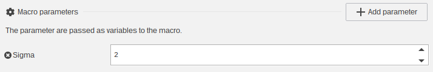

Macro node
The macro node allows to run existing ImageJ macros or execute algorithms that are not directly
available as JIPipe nodes. You will find it in Images > ImageJ Macro.

Inputs and outputs
By default, the node has no inputs and outputs. Use to the + button to add them.
For example, if you want to process one image and output the processed result,
create one input and one output.

By default, there are four data types that can be used as input and output:
- Any image data type
- Results table
- ROI List
- Paths
Depending on the data type, JIPipe converts inputs into a format that can be processed by an ImageJ macro. The other way around, JIPipe extracts outputs from via modes that are commonly used in macros.
Developers can provide their own integrations to add more data types.
Image data
As input: The image is opened as ImageJ image window, named according to the slot name. We recommend to use the macro command select(<window name>) to first select the image window before applying the processing.
As output: The image is extracted from an image window, named according to the slot name. Use the rename() command to rename outputs accordingly.
Example (for the node shown above)
// The input is created as window "Input"
selectWindow("Input");
run("Gaussian Blur...", "sigma=2");
// The node expects an image window "Output"
rename("Output");
Results table
As input: The table data is opened as the main “Results” table. We recommend to have only one results table input, as the conversion overwrites the current table.
As output: The table data is extracted from the main “Results” table.
You should only have one results table input, as only the latest input is used. If you want to merge tables, use JIPipe nodes for this.
ROI data
As input: The ROI are added to the ROI manager. Like with the results table data, the existing ROI manager is cleared.
As output: The ROI are extracted from the ROI manager.
You should only have one results ROI List data input, as only the latest input is used.
Path data
As input: Paths are defined as string variable, named according to the input slot name. Please note that the slot name must be a valid variable name.
As output: A path is extracted from a results table window (row 0, column 0). We do not recommend to extact paths as output, as ImageJ does not have native handling for such data.
We recommend to only use paths as input. The extraction as output is unpredictable, as ImageJ has not a native way to display this type in a way that can be distinguished from result tables.
Parameters
The most important parameters are
- The macro code
- The list of variables

The Code parameter contains the macro code. You can hide it with Collapse or open
the code in a larger editor (in a separate tab).
Variables
The macro node allows you to create parameters that can be directly accessed from within JIPipe. The benefit is that those variables can be exported (custom nodes/group node) for ease of use or applying multiple parameter sets.

Click the Add parameter button in the Macro parameters category to add a variable/parameter.

In the dialog, you have to set following options:
- Select the data type of the parameter
- The
Unique identifieracts both as identifier inside JIPipe and the variable name inside the macro. - The
Nameis displayed in the JIPipe GUI - The
Descriptionfield allows you to provide a documentation displayed at the bottom of the parameter list
Variables inside macros
On running the macro node, the final code is assembled by adding variables at the top.
Variables are assembled as var <Unique identifier> = <Value>.
The values are converted as following:
| JIPipe parameter type | ImageJ macro variable type |
|---|---|
| String | String |
| Byte | Integer |
| Short | Integer |
| Double | Double |
| Float | Double |
| Path | String |
| Boolean | Boolean |
For example, a Gaussian blur node with a Sigma parameter will generate following code:
// Code generated from parameters
var sigma = 2.0;
// Code written in the "Code" parameter
selectWindow("Input");
run("Gaussian Blur...", "sigma=" + sigma);
rename("Output");
Path inputs are converted in a similar way.